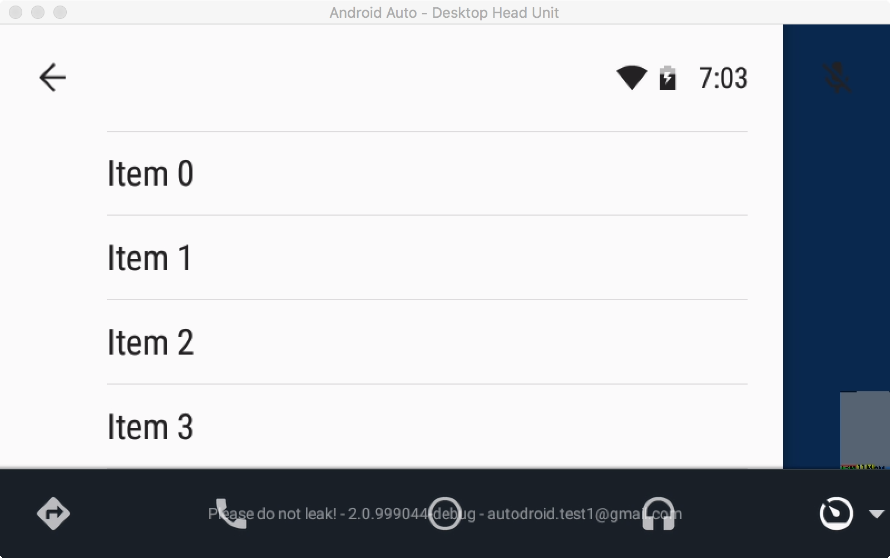

Menus form the primary navigation paradigm within Android Auto. The Android Auto app decor allows you to easily create a multi level menu using a data driven API that is part of the MenuController class you can obtain from the CarUiController.
A trivial example of how to quickly create a menu is shown below. We create a new menu with a few fixed items in the following snippet. Modify your code so that it looks like the following:
HelloWorldCarActivity.java
private MenuAdapter mRootMenuAdapter = new MenuAdapter() {
private static final int MAX_ITEMS = 4;
@Override
public int getMenuItemCount() {
return MAX_ITEMS;
}
@Override
public MenuItem getMenuItem(int i) {
return new MenuItem.Builder()
.setTitle(String.format("Item %d", i))
.setType(MenuItem.Type.ITEM)
.build();
}
@Override
public void onMenuItemClicked(int position) {
// TODO: Handle the case where the user selects on something.
}
};
@Override
public void onCreate(Bundle bundle) {
super.onCreate(bundle);
setContentView(getLayoutInflater().inflate(R.layout.main_layout, null));
// Add this block to create the menu.
MenuController menuController = getCarUiController().getMenuController();
menuController.setRootMenuAdapter(mRootMenuAdapter);
menuController.showMenuButton();
}Menus in Android Auto are powerful mechanisms for surfacing data. They allow you to pass in hierarchical contents and manage the rendering and safety lockouts for you so you do not have to worry about these aspects.
The features of the API shown here only scratch the surface; you are highly encouraged to read the API documentation to see how you can deal with slow loading menus, add rich features like images and checkboxes, and implement submenus.
Compile and run your application again. You should see a menu that looks like this:

This is just a very quick introduction into the basic capabilities of the Menu APIs provided by Android Auto. The menu system in Android Auto is a powerful tool and you are encouraged to read the full documentation and explore all its capabilities.